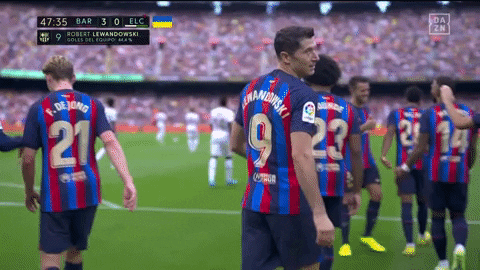
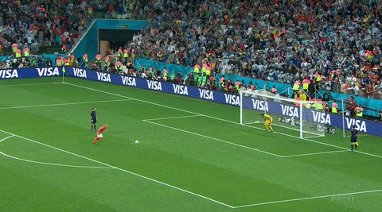

The history of Futbol Club Barcelona begins from the football club's founding in 1899 up until the present day. FC Barcelona, also known simply as Barcelona and familiarly as Barça, is based in Barcelona, Catalonia, Spain. The club was founded in 1899 by a group of Swiss, Catalan, German, and English footballers led by Joan Gamper. The club played amateur football until 1910 in various regional competitions. In 1910, the club participated in their first of many European competitions, and has since amassed fourteen UEFA trophies and a sextuple. In 1928, Barcelona co-founded La Liga, the top-tier in Spanish football, along with a string of other clubs. As of 2023, Barcelona has never been relegated from La Liga, a record they share with Athletic Bilbao and arch-rival Real Madrid.